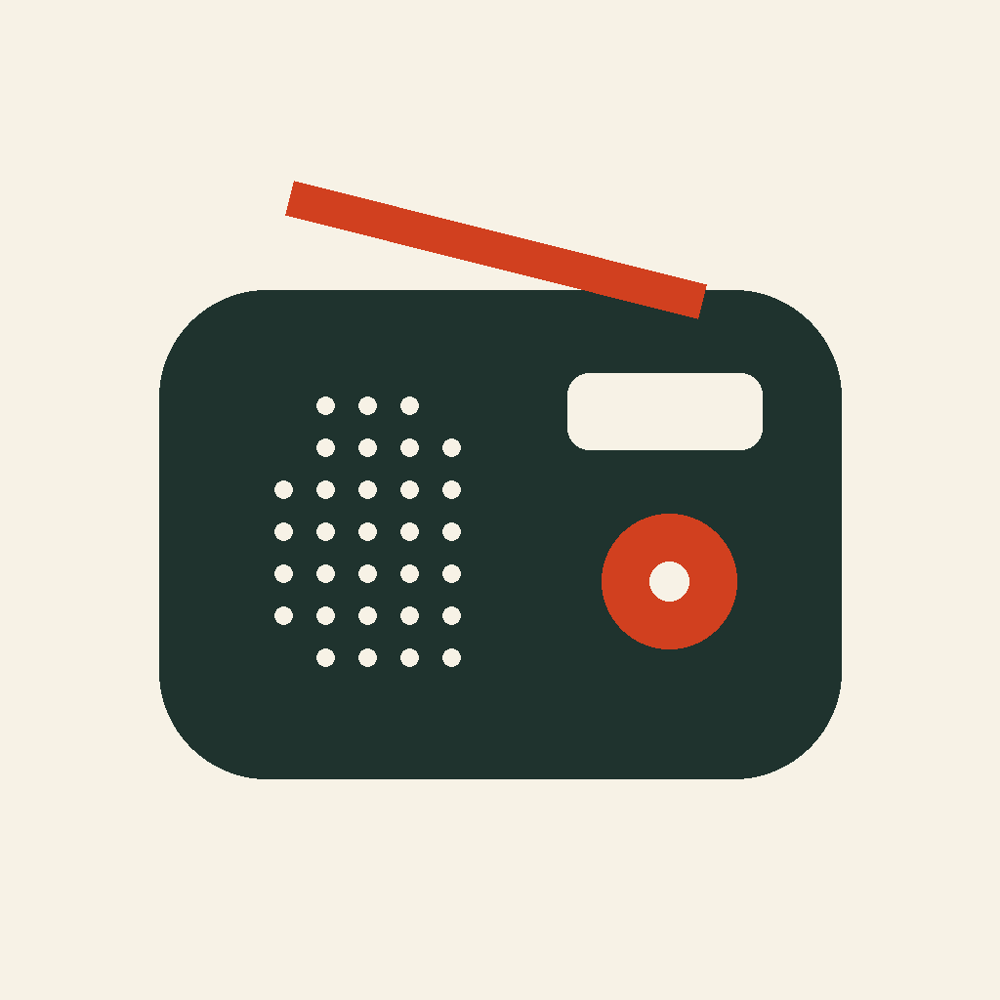
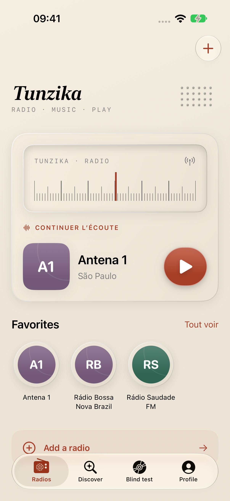
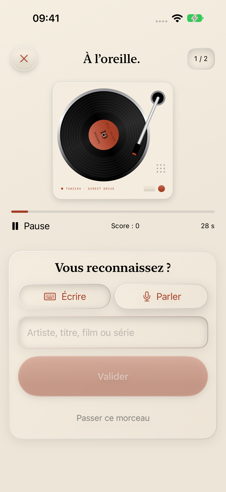

Radio · Music · PlayYour radio.
Your next discovery.
Listen to live stations, recognize the song in the room, and put your music knowledge to the test. A warmer place for your daily listening.
For iPhone and iPad with iOS 27. Radio requires internet. Apple Music playback and the playlist quiz require a compatible subscription. The new music interface currently uses French.

